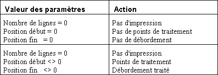

Le choix Bloc courant du menu Paramètres (accessible également par F3) permet de définir les caractéristiques du bloc en cours d'édition. On peut y faire appel à n'importe quel moment mais il est conseillé de l'appeler dès la création du bloc. Des explications détaillées sur les blocs sont données dans les différentes rubrique du livre Notion de bloc.
Attention :
Les informations saisies ici sont valables uniquement pour le bloc considéré. Si le masque comporte plusieurs blocs, vous devrez faire appel à ce choix pour CHAQUE bloc. Les boutons et permettent de passer d'un bloc à l'autre sans quitter la boîte de dialogue.
Le garnissage des différents paramètres est le point le plus délicat de la conception d'un masque car Xwin ne contrôle pas la cohérence des valeurs saisies (en particulier les Positions début et fin). En cas de valeurs erronées (débordement permanent d'un bloc par exemple), l'édition peut devenir une boucle sans fin ... et consommer beaucoup de papier !
Les paramètres d'un bloc sont :
|
Libellé affiché en haut de la boîte |
|
|
No |
Numéro du bloc. |
|
Libellé |
Commentaire identifiant le bloc. |
|
Type de Bloc |
Multi-choix indiquant le "comportement" du bloc à l'impression :
Pour plus de détails sur les types de bloc, consultez la rubrique Blocs fixes et blocs mobiles. |
|
Nombre de lignes |
Indique le nombre de lignes à imprimer du bloc Mobile ou Tableau (valeur non significative pour un bloc de type Fixe ou Fond). |
|
Saut avant |
Indique si un saut de page doit être effectué avant l'impression du bloc. |
|
Saut après |
Indique si un saut de page doit être effectué après l'impression du bloc. |
|
Position début |
Ce paramètre peut s'exprimer positivement ou négativement (Cf. rubrique Positionnement des blocs) :
|
|
Position fin |
Comme pour la Position Début, ce paramètre peut s'exprimer positivement ou négativement (Cf. rubrique Positionnement des blocs). |
|
Débordement |
Ce paramètre n'a de sens que pour un bloc Mobile ou Tableau. S'il est différent de zéro, il indique le numéro du bloc qui doit être imprimé en cas de débordement, c'est à dire quand le bloc ne peut plus être imprimé dans l'intervalle [Position début...Position fin] défini précédemment. |
|
Chaînage |
Si ce paramètre est différent de zéro, il indique le numéro du bloc qui doit être imprimé (systématiquement) après le bloc courant. Par exemple, il est courant de chaîner Bloc "Fin de page" et Bloc "Début de page (suivante)". |
|
Répéter si impression d'un rich-edit |
En impression graphique, ce paramètre indique le mode de traitement des objets rich-edit lorsque le texte est plus grand que la boîte définie dans le masque :
Cette option est interdite si le bloc contient aussi un objet Tableau. Pour plus de précisions à ce sujet, voir la rubrique L'objet Rich-Edit. |
|
Eviter les lignes orphelines pour les rich-edit |
Ce paramètre permet d'éviter le découpage d'un texte sur deux pages. Si l'objet rich-edit déborde de la page en cours et qu'il peut être imprimé en entier sur la page suivante, Ymig saute à la page suivante. |
|
Bloc Parent + tableau |
Si le bloc est de type "Tableau", indique le numéro du bloc contenant le tableau "père" et le nom de ce tableau. |
|
Cadre Traitements |
|
|
Arrêt avant |
Si ce paramètre est différent de zéro, il indique un numéro de point d'arrêt, exécuté avant l'impression du bloc (uniquement si le bloc est appelé par chaînage ou après un débordement). |
|
Arrêt après |
Si ce paramètre est différent de zéro, il indique un numéro de point d'arrêt, exécuté dans deux cas :
Dans ces cas, la variable Harmony.Iarret du programme Diva contient la valeur de ce paramètre. Pour plus de détails, consultez le paragraphe Algorithme de l'impression des blocs du livre consacré à ymig. |
|
(Traitement) Avant |
Nom du traitement à exécuter avant l'impression du bloc. Il est important de noter que le gestionnaire ymig fait ses calculs sur le bloc avant d'appeler cette séquence. Ceci implique qu'en cas de débordement, le chaînage au bloc de débordement est effectué avant le point de traitement. Il est donc déconseillé d'utiliser cette séquence pour demander à ymig d'imprimer un autre bloc que celui initialement prévu. Pour ce faire, il convient d'utiliser le champ Traitement Avant gestion, qui permet d'appeler un point de traitement avant que ymig ait fait ses calculs. Vous pouvez saisir le nom manuellement ou cliquer sur la flèche, auquel cas vous ouvrez un menu contextuel (voir Saisie d'un nom de traitement). |
|
(Traitement) Après |
Nom du traitement à exécuter après l'impression du bloc. Vous pouvez saisir le nom manuellement ou cliquer sur la flèche, auquel cas vous ouvrez un menu contextuel (voir Saisie d'un nom de traitement). |
|
(Traitement) Avant gestion |
Nom du traitement à exécuter avant tout traitement sur le bloc. Vous pouvez saisir le nom manuellement ou cliquer sur la flèche, auquel cas vous ouvrez un menu contextuel (voir Saisie d'un nom de traitement). |
|
Cadre Transparence |
|
|
Blocs |
Les blocs dont les numéros sont spécifiés ici sont affichés en même temps que le bloc courant. Cela permet d'aligner plus facilement les objets entre plusieurs blocs. Il s'agit uniquement d'une facilité de dessin et ce paramètre n'a aucune influence lors de l'exécution du masque. |
|
Positions |
Numéros de ligne où les blocs en transparence doivent être affichés, de manière à éviter d'éventuels chevauchements entre les objets des différents blocs. Si vous avez spécifié plusieurs blocs, indiquez la position de chaque bloc en séparant les numéros de ligne par un point-virgule (;). |
|
|
|
Remarque :
Les champs zpage et zligne de l'enregistrement system contiennent respectivement les numéros de page et de ligne courantes. Elles peuvent être utilisées dans le masque. Attention toutefois, la valeur de zligne n'est actualisée qu'en fin de bloc et non pas ligne par ligne. zligne peut donc être éditée dans un "bloc détail" mais pas sur chaque ligne si ce bloc comporte plusieurs lignes (le même numéro sera édité sur toutes les lignes du bloc).
Désactivation de l'impression d'un bloc
A l'installation de l'application, il est parfois nécessaire de désactiver complètement l'impression d'un bloc. C'est le cas notamment lorsqu'un masque contenant des encadrements est utilisé avec du papier pré-imprimé : il faut alors invalider les blocs qui servent au cadrage.
Pour qu'un bloc ne soit pas imprimé, tout en conservant les appels aux éventuels points de traitement et la gestion du débordement, il faut :
Que le paramètre Nombre de lignes soit nul.
Que les paramètres Position début et Position fin soient non nuls.
Pour qu'un bloc soit entièrement désactivé, c'est à dire qu'il ne soit pas imprimé, que les éventuels points de traitement ne soient pas exécutés et que le débordement ne soit pas traité, il faut :
Que le paramètre Nombre de lignes soit nul.
Que les paramètres Position début et Position fin soient nuls.
Les valeurs à donner aux paramètres pour désactiver un bloc sont résumées dans le tableau suivant :

Remarque
La désactivation d'un bloc peut également se faire dans un point de traitement. Voir la rubrique Modification des caractéristiques d'un bloc du livre consacré à Ymig.